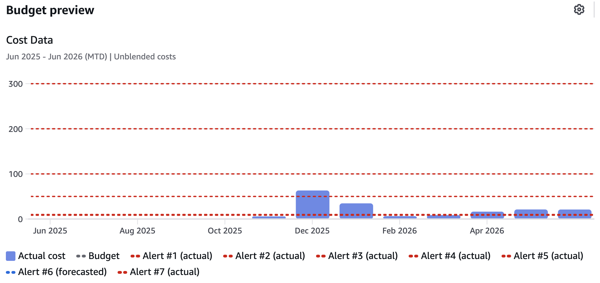
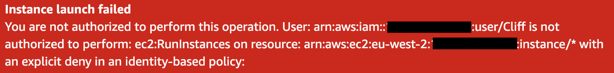

Published 24 June 2026
AWS Cost Protection Strategy
After finding several small but unexpected AWS charges, I built a layered cost protection strategy across my accounts using budget alerts, monthly audits, region restrictions and IAM guardrails.
{kind=link}

Multiple budget thresholds were configured to provide escalating alerts as AWS costs increase.
Why I reviewed my AWS cost controls
I started with a simple billing audit across my AWS accounts. The aim was to check whether anything had been left running after labs, experiments or infrastructure changes.
The audit found several small but unexpected charges, including AWS Config recording and an old RDS snapshot. None of the charges were serious on their own, but they highlighted a wider issue: small AWS costs can persist quietly if they are not reviewed regularly.
The audit also exposed the limits of budget alerts. They are useful for detecting unexpected spend, but they only react after costs have started to accumulate.
One of the more uncomfortable discoveries was realising that AWS does not provide a simple hard spending cap for an account. Budgets and alerts can warn about costs, but they do not stop resources being created. In theory, a sufficiently expensive service, configuration mistake or compromised account could generate costs running into tens or even hundreds of thousands of pounds before a bill became due.
That realisation changed the direction of the project. Instead of focusing solely on cost monitoring, I started looking for ways to prevent high-cost actions from happening in the first place.
Detection controls
The first layer of the strategy was detection. I configured monthly budgets in each account, with normal alerts for expected usage and additional emergency thresholds for unusual spend.
Each account now has alerts for:
- 85% of the monthly budget
- 100% of the monthly budget
- forecasted spend exceeding the budget
- emergency thresholds at $50, $100, $200 and $300
The lower budget alerts are useful for normal cost awareness. The higher thresholds are deliberately different. They are not there for small overspend; they are there to flag that something has gone badly wrong and needs immediate attention. I call these my 'WTF alerts'.
Removing noisy alerts
I also reviewed AWS Cost Anomaly Detection. In practice, it was adding more noise than value for these small accounts. If I received an anomaly email, I would usually have received a budget alert at the same time, and I would follow the same investigation process either way.
I decided to remove the anomaly alert subscriptions and rely instead on budget alerts plus a scheduled monthly billing audit. This keeps the alerting model simple and reduces the chance of ignoring important emails because too many overlapping systems are notifying me.
Preventive controls
Having established the monitoring layer, the next step was to add preventive controls using IAM policies attached to a RestrictedUsers group in each account.
The guardrails restrict several high-risk areas:
- regions outside the ones I intentionally use
- large EC2 instance types and expensive accelerator families
- large RDS instance classes
- services such as SageMaker, Bedrock, DataZone and EMR
- additional analytics services such as Redshift and OpenSearch in non-training accounts
The region restrictions are especially useful in a training account. If I accidentally follow a lab in the wrong region, or if credentials are ever used somewhere unexpected, AWS now blocks actions outside the approved regions.
{kind=link}

IAM guardrails prevented the launch of a high-cost EC2 instance, demonstrating the difference between detecting unexpected spend and preventing it.
Testing the guardrails
After creating the policies, I tested them directly rather than assuming they worked.
I confirmed that approved regions still worked, blocked regions returned explicit deny errors, and attempts to launch a large EC2 instance were stopped by the guardrail policy. I also found that blocking SageMaker required including Amazon DataZone, because the newer SageMaker Unified Studio setup uses DataZone behind the scenes.
What this does not solve
These controls are mainly designed to stop mistakes and reduce the chance of unexpected costs. I am the sole administrator for these accounts, but the guardrails are not a complete defence against a fully compromised administrator account.
A compromised administrator account could still remove IAM policies or take a user out of the RestrictedUsers group. Strong MFA, protected root accounts, no unnecessary access keys and careful credential management remain essential.
For stronger account-level controls, I considered AWS Organizations and Service Control Policies, but I decided against this as I need separate billing for tax-deductible and non-tax deductible accounts.
Conclusion
The biggest lesson from this work was that AWS cost management is not just about watching the bill. Budget alerts are important, but they are detection controls. IAM guardrails add a preventive layer by stopping selected high-risk actions before they can create charges.
The final setup is intentionally simple: monthly audits, budget alerts, emergency thresholds, approved-region restrictions and deny policies for services and instance types I do not currently need. It is not a hard spending cap, but it makes expensive mistakes much harder to make accidentally.